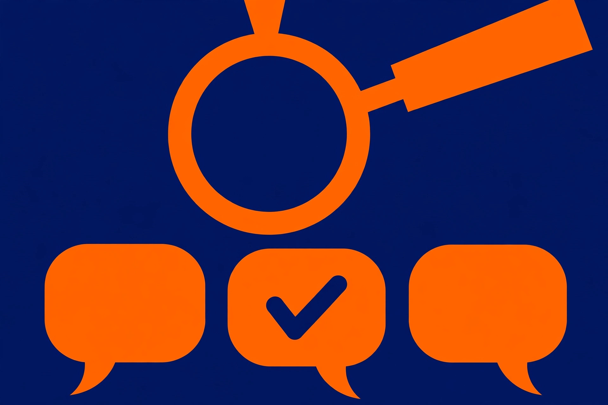

How to check AI answers for mistakes: a step-by-step fact-check

AI chatbots answer in a calm, confident tone whether they are right or wrong — and that tone tells you nothing. OpenAI itself warns that ChatGPT can make mistakes and tells users to check important information, and Google gives the same warning for Gemini: it can sometimes make mistakes, and its responses should always be double-checked. The good news is that checking an answer is a learnable routine, not a talent. This guide walks through one complete routine you can run on any answer you plan to rely on, repeat to someone else, or act on. It takes about five minutes once it becomes a habit.
First, decide how much checking this answer deserves
Not every answer needs the full routine. Use this simple decision framework before you start:
- Low stakes, easy to undo — a recipe idea, a reworded sentence, a brainstorm list. A quick skim is enough.
- Medium stakes — facts you will repeat, send to a colleague, or use in a document. Run Steps 1 and 2 below on the claims that matter.
- High stakes — anything involving money, health, legal questions, deadlines, or safety. Run all four steps, and for professional topics treat the answer as a starting point only. Google is explicit that Gemini output should not be relied on as medical, legal, financial, or other professional advice — the same caution applies to every chatbot.
The routine below is written for the medium and high cases. Work through it in order; each step catches a different kind of error.
Step 1: Split the answer into checkable claims
- Read the answer once, slowly, with a pen or a notes app open.
- Underline or copy out every name, number, date, quote, and link. These concrete details are the parts a chatbot most often gets wrong or invents outright.
- Rewrite each one as a single short claim: "the store opens at 9 a.m. on Sundays," "the fee is $25 a year," "this law changed in 2024." One claim per line.
- Set aside whatever is left over. Summaries, opinions, and general explanations need less checking than the concrete claims — your limited time goes on the claims first.
Why this works: a flowing paragraph hides its weak points. A list of separate claims exposes them, because each line either survives a check or it does not.
Step 2: Open the actual source — and read what it really says
- If the answer includes links, open every one of them. A link that leads nowhere, or to a page about something else, is an immediate red flag.
- If the answer names a book, study, report, or court case without a link, search for its exact title in a search engine or an official database. If nothing turns up, treat that claim as unconfirmed — a realistic-looking reference proves nothing until you have found it yourself.
- When you find the source, compare its actual wording with the claim. Do not stop at the headline or the chatbot's summary of the page. There is a well-documented kind of failure where the chatbot's own link leads to a page that says the opposite of what the chatbot claimed — in one Canadian tribunal case, an airline chatbot told a customer he could claim a bereavement fare after travelling, while the page it linked to said he could not. Reading the page, not the summary, is what catches this.
- Check that the source is current and actually applies to you. A page can be real and still be out of date, or describe rules for a different country, plan, or year. Community reports have also shown chatbots treating hidden template text on a web page as if it were a live notice — another reason to look at the page as a normal visitor sees it, and to confirm anything important against the organisation's own official record.
Step 3: Redo the numbers yourself
- Take every number on your claims list — prices, percentages, totals, dates — and recalculate anything that was calculated for you, using a calculator. Check that units match (per month versus per year is a classic slip).
- For statistics, find the original table or report the number came from, and check what the number was actually measuring, and for whom.
- For dates and deadlines, confirm them against the official source from Step 2, not against a second chatbot answer.
Arithmetic and dates are where confident answers quietly fall apart, and they are also the easiest things for a beginner to verify exactly.
Step 4: Get a second opinion — the right way
A different chatbot, trained differently, tends to make different mistakes, so disagreement between two tools is a useful alarm bell. Two cautions make this step work:
- Ask neutrally. Paste the claim and ask "Is this accurate? What would make it wrong?" Asking "this is right, isn't it?" invites agreement.
- Never ask the same chatbot to grade its own answer. A chatbot asked "is this real?" about its own invented reference may simply confirm it. The check has to come from outside the answer — a source you opened, a number you recalculated, or at minimum a different tool.
Agreement between two chatbots is reassuring, not proof. Proof is the original source from Step 2 saying what the claim says.
The decision: use it, fix it, or discard it
Finish every check with a deliberate decision, claim by claim:
- Use it — the claim matched an official or primary source you opened yourself.
- Fix it — the claim was close but wrong in a detail you verified (a date, a price, a condition). Correct the detail and note where the correct version came from.
- Discard it — you could not find the source, the source disagreed, or two tools gave conflicting versions and no primary source settled it. An unconfirmed claim gets dropped, not repeated with a shrug.
Warning signs that should slow you down
- Very precise numbers with no source attached, such as an oddly exact percentage.
- Quotations attributed to named people that sound suspiciously neat.
- References to specific studies, cases, or books you cannot find with a quick search.
- Answers about recent events from a tool that is not browsing the web.
- An answer that changes the moment you push back — a sign it was never grounded in anything.
What success looks like
You have finished the check when every concrete claim on your list is marked used, fixed, or discarded; every surviving claim traces back to a source you opened and read yourself; and any number you kept has been recalculated at least once. If you cannot say that, the answer is still a draft — no matter how confident it sounds.
FAQ
Can't I just ask the chatbot for its sources? Ask — then open them. Chatbots can invent plausible-looking references, so a citation only counts once you have found the real page and confirmed it says what the answer claims.
How long should checking take? About five minutes for a typical answer using the steps above. High-stakes answers deserve longer, and some deserve a qualified human instead.
What if two chatbots disagree? Treat the disagreement as the finding: at least one is wrong. Go back to the primary source — the official page, the original document, the organisation itself — and let it settle the question.